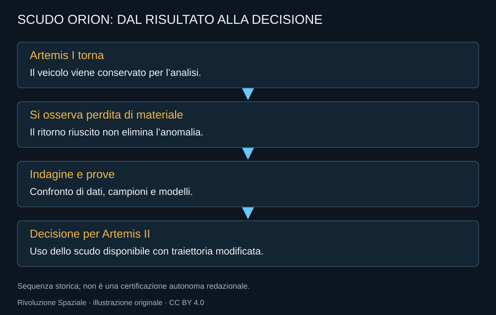

Lo scudo termico di Orion non è un rivestimento decorativo. Durante il ritorno deve proteggere la capsula mentre l’energia del viaggio viene dissipata. Il materiale ablativo è progettato per trasformarsi e consumarsi in modo controllato. Perdere materiale non è quindi, da solo, una sorpresa; il problema è perderlo con un comportamento diverso da quello previsto e accettato.
Artemis I lascia una domanda concreta
Il veicolo torna, ma l’ispezione mostra distacchi che richiedono un’indagine. NASA collega il fenomeno al comportamento dei gas prodotti nel materiale durante il particolare profilo di rientro: la loro fuoriuscita non avviene come previsto e contribuisce a pressioni, fessure e perdita di materiale.
La spiegazione non si ricava dalla sola fotografia di una cavità. Servono dati di temperatura e traiettoria, materiali, campioni e prove che riproducano le condizioni rilevanti. Una camera di prova che raggiunge un picco di calore non rappresenta automaticamente tutta la storia termica di un rientro reale.

Materiale e traiettoria lavorano insieme
Il carico termico dipende dal percorso. Non si può confrontare una protezione separandola dalle condizioni nelle quali viene usata. La forma della traiettoria, il tempo nei diversi ambienti e i margini disponibili sono parte della decisione sul rischio.
Per Artemis II NASA sceglie di usare lo scudo già installato, modificando il profilo di rientro alla luce dell’indagine. La decisione viene annunciata nel dicembre 2024. Non va raccontata come il semplice ignorare un danno: deve essere letta attraverso il percorso di prove e la motivazione tecnica esposta.
Il calendario paga il lavoro di sicurezza
Un’indagine può richiedere tempo e creare conseguenze su tutte le missioni successive. La pressione per rispettare una data non rende disponibili i dati mancanti. Il programma deve decidere con criteri che restino comprensibili anche quando il rinvio produce critiche.
Questa parte della storia è meno celebrata del lancio e più importante per l’equipaggio. La domanda non è se la prima capsula sia tornata, ma perché sia tornata e quali condizioni garantiscano un margine accettabile al prossimo veicolo.
Artemis II e la verifica successiva
Il ritorno umano del 2026 fornisce dati del profilo scelto. Il fatto che l’equipaggio sia arrivato sulla Terra è un risultato fondamentale, ma l’analisi di hardware e dati conserva il proprio ruolo. Una ricostruzione seria non attribuisce allo scudo una vita futura illimitata soltanto perché una missione è conclusa.
Le configurazioni successive possono richiedere ulteriori verifiche. Un problema risolto per una traiettoria non è automaticamente ritirato per tutte le altre. Il valore dell’indagine sta anche nel descrivere questi limiti.
Artemis dimostra qui una regola che attraversa tutta la monografia: la fiducia non è l’assenza di problemi osservati, ma la capacità di comprenderli e di prendere decisioni proporzionate. Le immagini più serene dell’ammaraggio dipendono da questo lavoro.
Fonti pubbliche e tracce
- NASA, causa della perdita di materiale dello scudo di Artemis I, 5 dicembre 2024. Gas nell’Avcoat, permeabilità e ricostruzione delle condizioni di rientro.
- NASA, Orion Heat Shield Findings, 5 dicembre 2024. Causa della perdita di materiale e decisione sulla traiettoria Artemis II.
- NASA, equipaggio di nuovo a Houston, 11 aprile 2026. Ritorno dell’equipaggio e distanze del sorvolo.